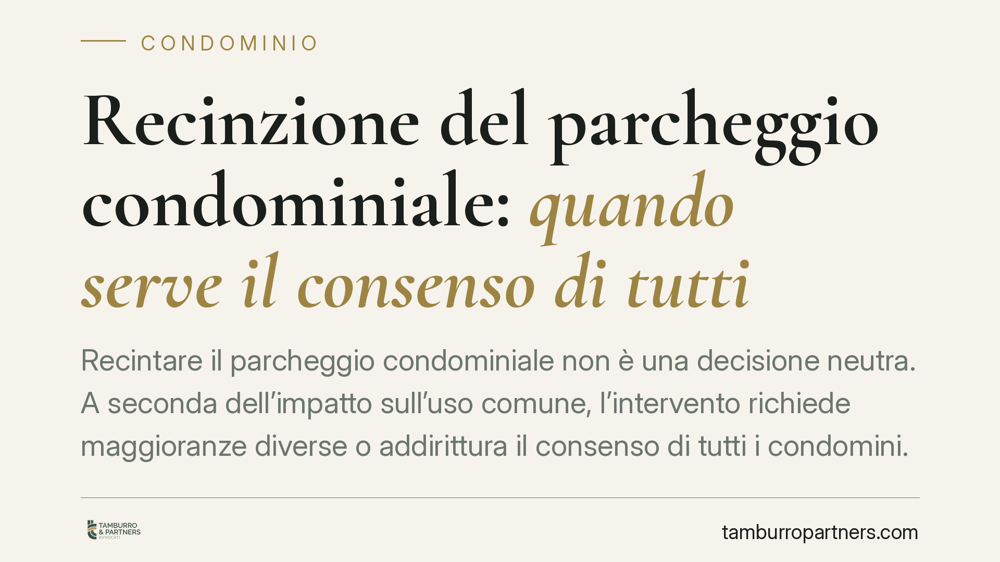

Recinzione del parcheggio condominiale: quando serve il consenso di tutti
Recintare il parcheggio condominiale non è una decisione neutra. A seconda dell'impatto sull'uso comune, l'intervento richiede maggioranze diverse o addirittura il consenso di tutti i condomini. E c'è un secondo piano, spesso trascurato: quello urbanistico. Una delibera, da sola, non basta a mettere al riparo da un abuso edilizio. Vediamo i confini precisi.

Recinzione del parcheggio condominiale: due piani da tenere distinti
La domanda ricorre spesso in assemblea: possiamo recintare il parcheggio comune? La risposta corretta impone di separare due piani che tendono a sovrapporsi.
Il primo è interno al condominio e riguarda il quorum necessario per deliberare. Il secondo è pubblicistico-urbanistico e attiene alla compatibilità dell'opera con la disciplina edilizia. Sono valutazioni autonome: una delibera regolare sul primo piano non sana un'irregolarità sul secondo.
L'inquadramento civilistico: pari uso, innovazioni e quorum
Sul piano condominiale, il punto di partenza è l'art. 1102 c.c., che consente a ciascun condomino di servirsi della cosa comune purché non ne alteri la destinazione e non impedisca agli altri di farne pari uso.
La recinzione va poi qualificata. Se comporta una innovazione – cioè una modifica materiale che incide sulla destinazione o sulla struttura del bene comune – trova applicazione l'art. 1120 c.c.. Le innovazioni ordinarie richiedono la maggioranza degli intervenuti che rappresenti almeno la metà del valore dell'edificio, secondo i quorum dell'art. 1136, comma 5, c.c.
Il confine decisivo è questo: finché la recinzione non pregiudica il pari uso garantito dall'art. 1102 c.c. e non rende inservibile lo spazio a uno o più condomini, può essere approvata a maggioranza qualificata. Quando invece l'intervento sottrae di fatto l'utilizzo del parcheggio ad alcuni condomini, o ne muta la destinazione a vantaggio esclusivo di altri, si esce dal perimetro dell'innovazione lecita: in tal caso serve il consenso di tutti i condomini, perché nessuna maggioranza può disporre del diritto individuale al godimento della cosa comune.
È quindi impreciso affermare che la modifica dell'uso richieda *sempre* l'unanimità. Occorre distinguere: innovazione approvabile a maggioranza qualificata da un lato, atto lesivo del pari uso o dispositivo del diritto altrui – che esige il consenso unanime – dall'altro.
Il piano urbanistico: la delibera non sostituisce il titolo edilizio
Regolata la questione interna, resta quella esterna. La recinzione di un'area destinata a parcheggio può incidere su vincoli e standard urbanistici. Rileva qui l'art. 18 della L. 6 agosto 1967, n. 765 (cosiddetta legge ponte), che ha introdotto l'obbligo di riservare spazi a parcheggio nelle nuove costruzioni, disciplina poi evoluta con la L. 24 marzo 1989, n. 122 (legge Tognoli).
La giurisprudenza amministrativa è costante nel ritenere che gli interventi su aree vincolate a parcheggio richiedano la verifica di compatibilità con il titolo edilizio e con la destinazione impressa dallo strumento urbanistico. Chiudere o recintare uno spazio soggetto a vincolo, senza il necessario provvedimento comunale, integra un'opera abusiva.
Da qui il principio che merita di essere ribadito: una delibera assembleare di sanatoria non regolarizza un abuso edilizio. Il condominio non ha il potere di autorizzare ciò che spetta all'amministrazione comunale. La regolarità va accertata sul piano pubblicistico, con gli strumenti previsti dalla normativa edilizia, e non può essere costruita retroattivamente con un voto interno.
Implicazioni pratiche per il condominio
Per l'amministratore e per i condomini il messaggio operativo è chiaro. Prima di deliberare occorre qualificare correttamente l'intervento (semplice innovazione o atto che tocca il pari uso) per individuare il quorum esatto. Subito dopo, e prima di realizzare l'opera, va verificato se l'area è vincolata e se serve un titolo edilizio.
Trascurare uno dei due piani espone a due rischi distinti: l'impugnazione della delibera da parte del condomino dissenziente e la sanzione amministrativa o l'ordine di demolizione da parte del Comune.
Cosa fare in concreto
- Qualificate l'intervento prima di convocare l'assemblea: verificate se la recinzione incide sul pari uso ex art. 1102 c.c. o resta una innovazione ordinaria ex art. 1120 c.c.
- Individuate il quorum corretto: maggioranza qualificata (art. 1136, comma 5, c.c.) per l'innovazione lecita, consenso unanime se l'opera sottrae il godimento ad alcuni condomini.
- Verificate la destinazione urbanistica dell'area presso l'ufficio tecnico comunale e accertate l'esistenza di eventuali vincoli a parcheggio.
- Acquisite il titolo edilizio necessario prima di eseguire i lavori: non affidatevi alla sola delibera.
- Non ricorrete a delibere di sanatoria per regolarizzare opere già realizzate: non producono effetto sul piano pubblicistico.
---
Contributo informativo a cura di Tamburro & Partners - Avv. Giuseppe Tamburro. Non costituisce parere legale.
Ogni condominio ha una storia a sé.
Se gestisci un'amministrazione e vuoi un confronto su una specifica questione condominiale, scrivi allo studio. Ti rispondiamo entro un giorno lavorativo.